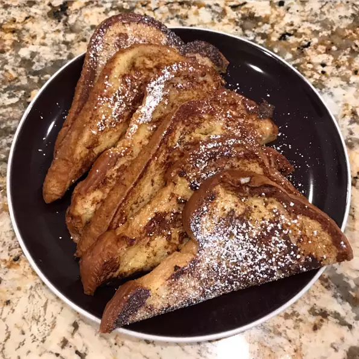

French Toast

Description
This is some French toast recipe I found on allrecipes.com ok
Ingredients
- 6 slices Thick-cut white bread, slightly stale
- 2 large eggs
- 2/3c milk
- 1tsp vanilla
- 1/4tsp cinnamon
- salt
- 1T butter
Steps
- Whisk milk, eggs, vanilla, cinnamon, and salt together in a shallow bowl.
- Lightly butter a griddle and heat over medium-high heat.
- Dunk bread in the egg mixture, soaking both sides. Transfer to the hot skillet and cook until golden, 3 to 4 minutes per side. Serve hot.